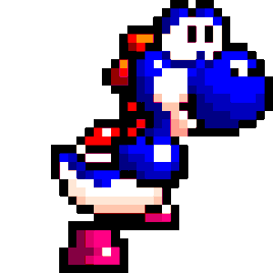

Trabalho de PW
História do Yoshi
Saiba um pouco mais sobre a história de Yoshi, o fiel companheiro de Mario.
Yoshi,o carismático dinossaurinho da Nintendo é o nosso personagem da vez. Criado em 1990 pelo designer gráfico Shigefumi Hiro para atender a demanda da Nintendo de realizar uma aventura em que Mario viajasse montado em um dinossauro. Sua primeira aparição foi no jogo Super Mario World, para o SNES, em que ele poderia ser resgatado a partir de um ovo e, uma vez na companhia do encanador mais famoso do planeta, poderia lançar sua língua pegajosa para capturar inimigos e pisar em terrenos em que o próprio herói da aventura não poderia caminhar. Yoshi ganhou tamanha notoriedade no jogo que uma segunda versão de Super Mario World foi criada para que o cativante réptil protagonizasse a cena. Em Super Mario World 2: Yoshi's Island, também para SNES, o herói é Yoshi, que carrega nas costas uma versão infantil de Mario em busca de Luigi, também de fraldas.
Não demorou muito para Yoshi se firmar como um personagem fixo do time da Nintendo junto com Donkey Kong, Mario, Luigi, Bowser e Toad. O dinossauro verde fez aparições em diversos jogos da Nintendo, algumas vezes como personagem jogável, outras como um coadjuvante e outras como guia para as aventuras. Tido como muito inteligente e de índole boa, seu nome faz menção à interjeição otimista japonesa “Yoshi!”, uma palavra que pode ser traduzida como “sim!”, mostrando que atitude positiva é sua marca.
Principais Jogos em que Yoshi Aparece
- Super Mario Wold
- Super Mario Kart
- Mario Is Missing!
- Yoshi's Cookie
- Yoshi's Safari
- Super Mario World 2: Yoshi's Island
- Tetris Attack
- Super Mario RPG: Legend of the Seven Stars
- Super Mario 64
- Yoshi's Story
- Mario Kart 64
- Mario Party
- Mario Golf
- Super Smash Bros.
- Mario Party 2
- Mario Tennis
- Yoshi's Crafted World
Yoshi não é o único de sua espécie. Ao longo da série de jogos, foram mostrados diversos tipos de Yoshis, de cores e habilidades diferentes. Os de cor vermelha, por exemplo, são capazes de transformar o inimigo engolido em fogo para cuspir em outros adversários, enquanto os de cor azul podem voar com um inimigo na boca. Ainda assim, a versão mais famosa é o Yoshi verde, presente inclusive na série animada do Super Mario e no filme homônimo de 1993, feito em animação computadorizada.Com essa popularidade, não há período glacial que ponha em extinção esse simpático animalzinho.

Obrigado!!